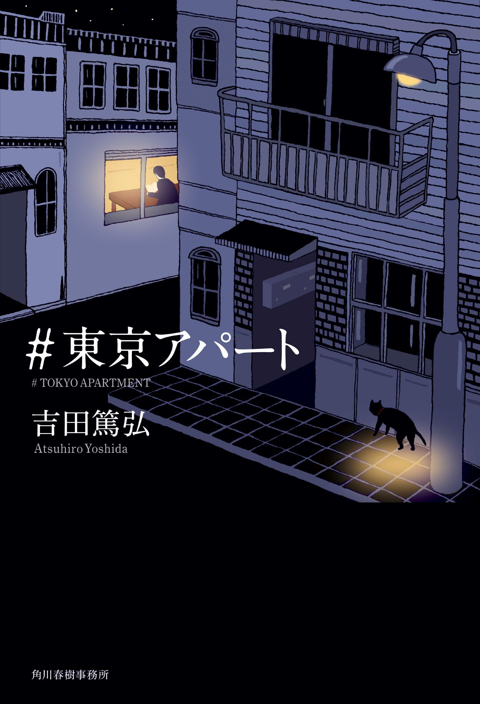

＃東京アパート 吉田篤弘

「部屋が人生を決めてしまうのかな？」「それとも、人生が部屋を決めるのかね」隣の天使から届けられる悪魔のケーキ。ベランダに置かれた大きな桃。「巨大アパート」でゴム印をつくりながら物語を紡ぐ青年。世界でいちばん雷の落ちない部屋。夜な夜なカラスと話す電話回収屋――。東京のアパートで暮らすさまざまな人びとの夢やさみしさ、ささやかな幸福と奇跡。あたたかな交感が街を照らす、愛おしくかけがえのない21の小さな灯の物語